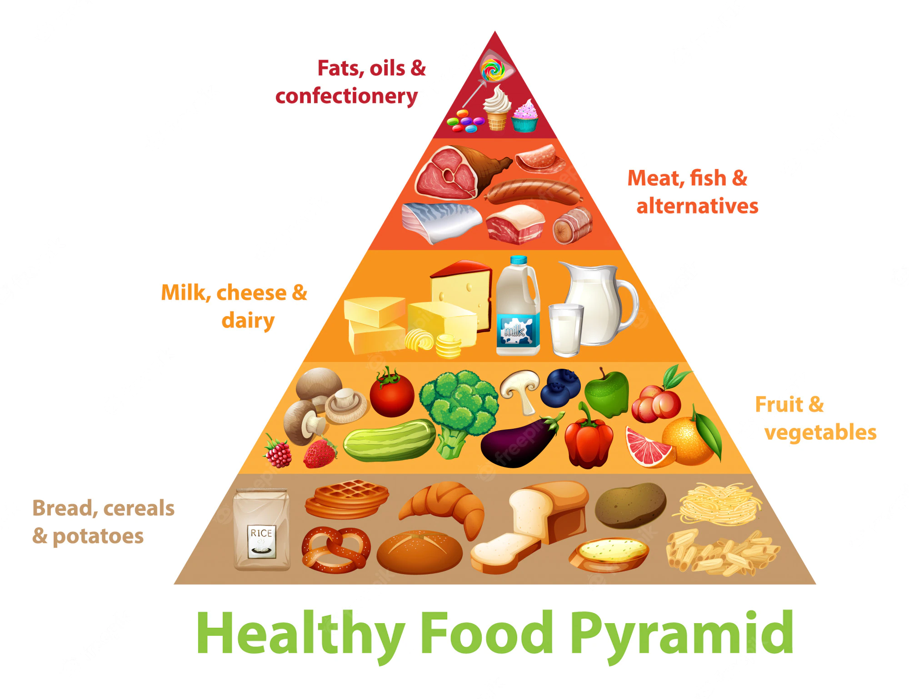
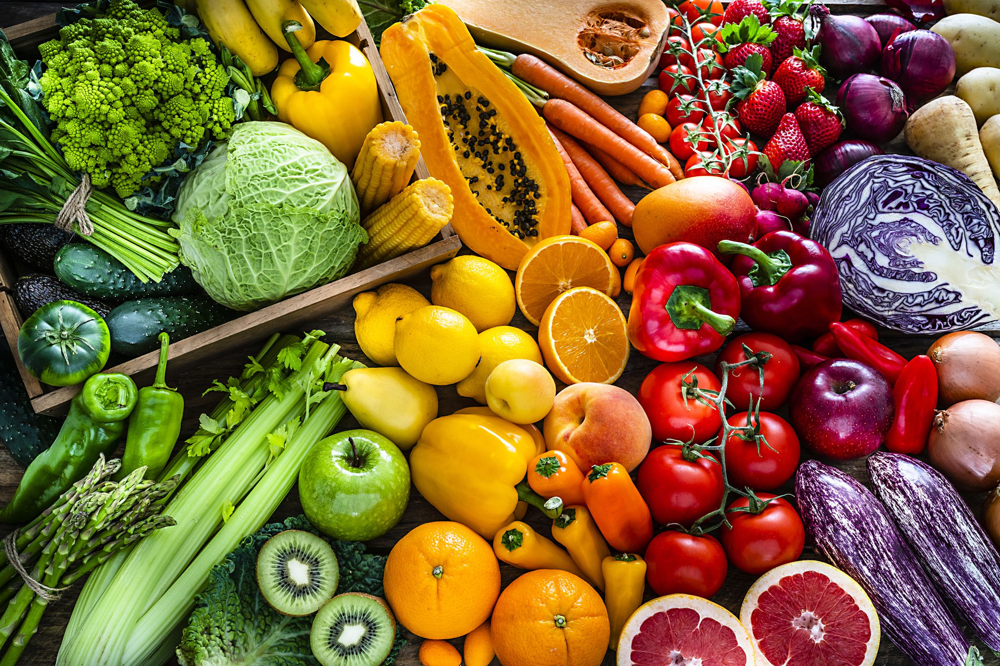

A team that works together to keep everyone healthy
To find more information on this subject, click Learn More
The benifits that these fruits give is that its an excellent source of essential vitamins and minerals. Fruits can also reduce the risk of cancer. Examples of some of those kind of Fruits are strawberries and blueberries.
Last updated 3 mins ago
Vegetables are low in calories but have a high amount of vitamins, minerals, and fibers. They can also fight inflammation. Some examples of Vegetables are Broccoli and Cauliflower.
Last updated 3 mins ago
What are the benifits of Grains? Well a benifit of Grains is that they have a high folic acid content helps prevent neural tube defects. Grains can also reduce the risk of having a stroke. Examples of grains are Amaranth and Brown Rice.
Last updated 3 mins ago
Meat contains several minals and is rich iron, which is necessary for transportion oxygen throughout the body. Also it prevents canacer. Examples of Protein would be fish and beef.
Last updated 3 mins ago
A known benfit of Dairy is reducing blood pressure. Examples of Dairy may be ice cream, milk, and cheese.
Last updated 3 mins ago
It is essential to have a good balance of all of the these types of food to prolong your life span and to help your body feel better or healthier.
Last updated 3 mins ago
In the world we live in now there are people who are overweight and don't know how to control it. Mostly African Americans are affected with weight gain than any other race. The average age for obesity is 16-25 and older. We are here to give you tips on how to control your weight and diet. Health effects of being overweight can include high blood pressure, cholesterol, stroke, body pain, and mental illness
While you try to make a decision on what food you want to eat, make sure to be mindful of how many calories your consuming. For example men need 2500 calories, while women only need 2000 a day. In order to manage your fat to muscle ratio you need to eat food like fruits, vegetables, whole grains, and low fat dairy products. Such as berries,oranges, avocados,spinach, dark beans,brown rice, and wheat bread are good things to eat. You can also eat foods like fish, seafood, lean meats, eggs, soy products, nuts, and seeds.